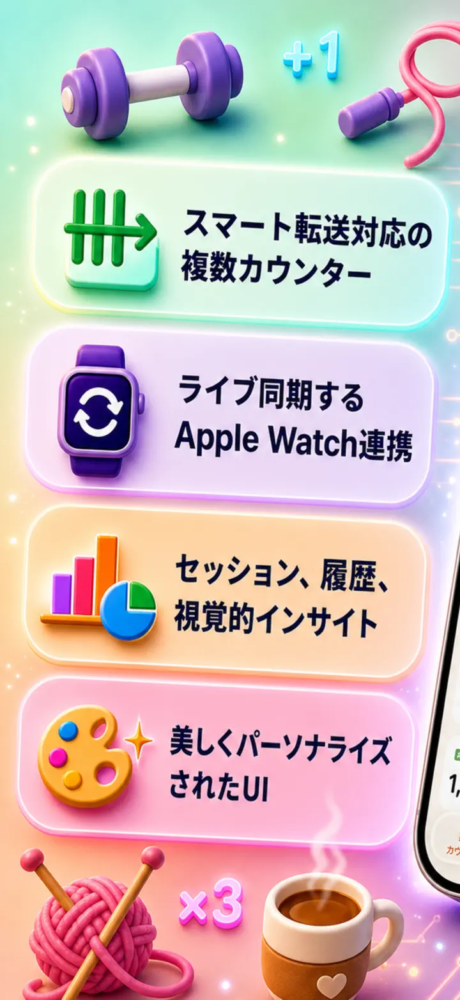
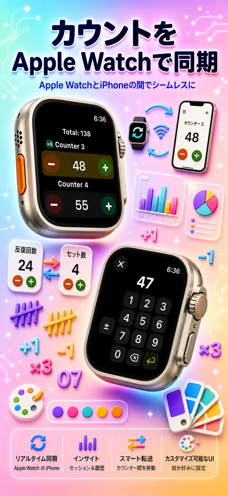
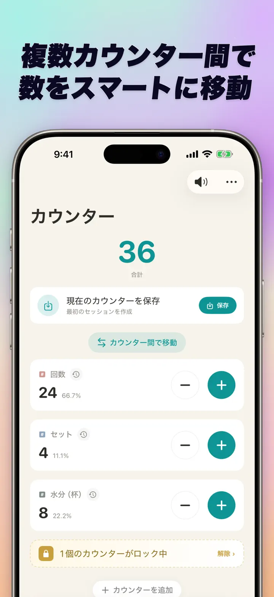
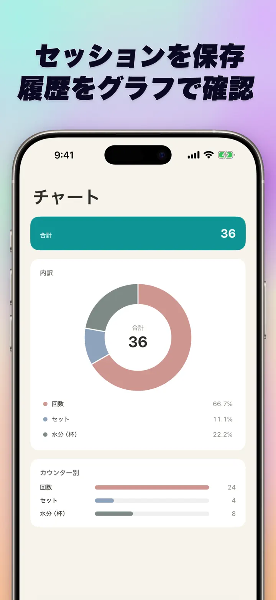
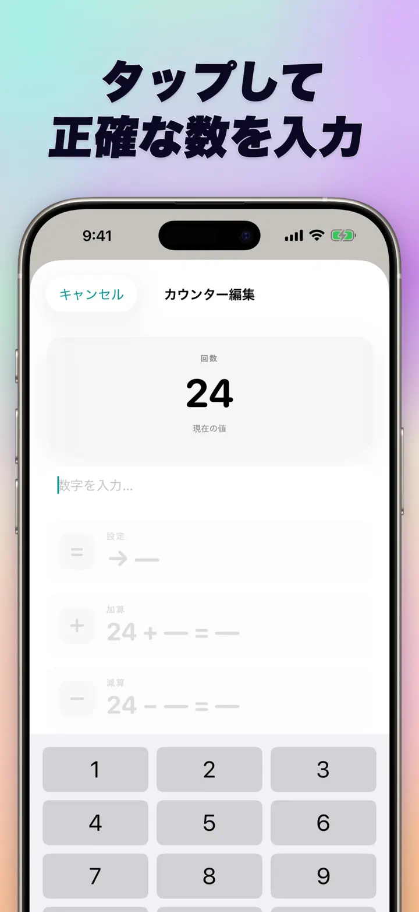
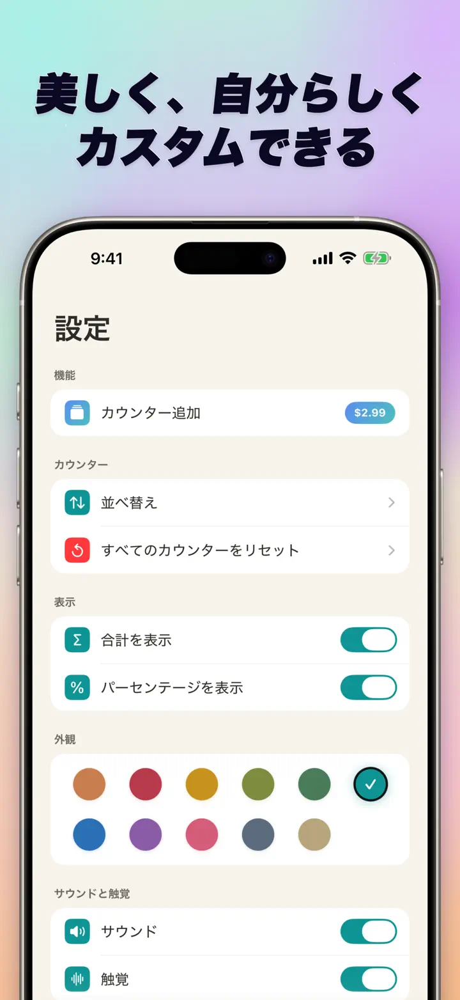
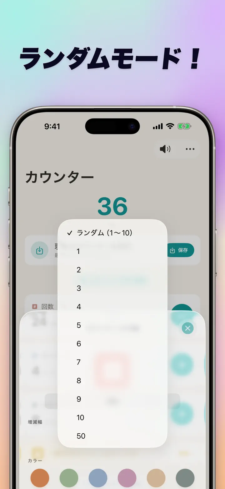

カウンター123
Watch同期・クリック・点数
新機能：ホーム画面ウィジェット。Appを開かずウィジェット上で +/- をタップして計数。カウンター＆クリッカー、Apple Watch同期、ランダムモード、グラフ、履歴。
App Storeからダウンロード
アプリについて
カウンター123は、iPhone、iPad、Apple Watchに最適化された高速で柔軟なタリー・カウンターです。名前と色を設定して、あらゆるものをカウント——筋トレの回数、編み物の段数、念珠、授業の点数、野球の投球数、在庫、ゲームのスコア。データは端末内にローカル保存、ネット接続不要です。
カスタムカウンター
- 活動、ゲーム、習慣、リストごとに別々のカウンターを作成
- 名前と色で個別にカスタマイズ
- ドラッグ＆ドロップで自由に並べ替え
- 長押しで高速連続カウント
- 完全オフライン動作——アカウント登録・クラウド不要
一括操作・値の転送
- 任意のカウンターをタップして開始値を直接入力——ゼロからやり直し不要
- 一括加減算：どんな数値でもワンステップで加減
- 値の転送：加減算を二重に行わず、カウンター間で値を直接移動
- カスタム増分：1、5、10、100など、好きな値で加算
- リアルタイム差分表示：変更が即座にハイライト
ランダムモード
- タップするたびに1〜10の新しい値をランダムに生成
- ＋ボタンで加算、−ボタンで減算できます
- ドリル、ゲーム、ランダム報酬、授業、練習メニューに便利
- ランダムなタップもカウンター履歴に記録されます
合計・グラフ
- すべてのカウンターの合計を表示
- パーセント表示：各カウンターの全体比率がひと目で分かる
- 棒グラフ：数値（#）とパーセント（%）を切り替え可能
- 値順ソートでランキングも瞬時に
履歴・共有
- 変更履歴：加算・減算・編集のすべてを記録
- カウンターセットを保存して瞬時に再利用
- チームメイト、生徒、友人とカウンター構成を共有
- 履歴は日付別ログ、セッション、日／週／月の統計として確認できます
Apple Watchとライブ同期
- iPhoneまたはApple Watchで更新すると、両方の値が同期されます
- ネイティブwatchOSアプリ——コンパニオンシェルではありません
- カウンター名・色・値がすべて手首に同期
- タップでカウント、長押しで連続加算
- iPhoneが手元になくても単独で動作
iPhone・iPad・Apple Watch対応
- 全画面サイズに最適化されたレイアウト
- iPadはより多くのカウンターを一度に表示、Split View対応
- プライバシー重視：完全ローカル保存、クラウド・アカウント不要
こんな場面に最適
- 筋トレの回数・セット数
- 編み物の段数・かぎ針の目数
- 念珠・数珠・お経の回数
- 授業の点数・生徒のタリー
- 野球の投球数・打席数
- 在庫管理・棚卸し
- ボードゲーム・カードゲーム・麻雀の得点
- プールやランニングの周回数
- バードウォッチングのライフリスト
- イベントの入場者数
- 習慣トラッキング・目標達成
- 倉庫のサイクルカウント
カウンター123で、あらゆるカウントを効率的に——明瞭・高速・プライベート。
プライバシーポリシー: https://masawata.net/privacy-policy.html 利用規約: https://www.apple.com/legal/internet-services/itunes/dev/stdeula/
スクリーンショット






カウンター123
新機能：ホーム画面ウィジェット。Appを開かずウィジェット上で +/- をタップして計数。カウンター＆クリッカー、Apple Watch同期、ランダムモード、グラフ、履歴。
App Storeからダウンロード